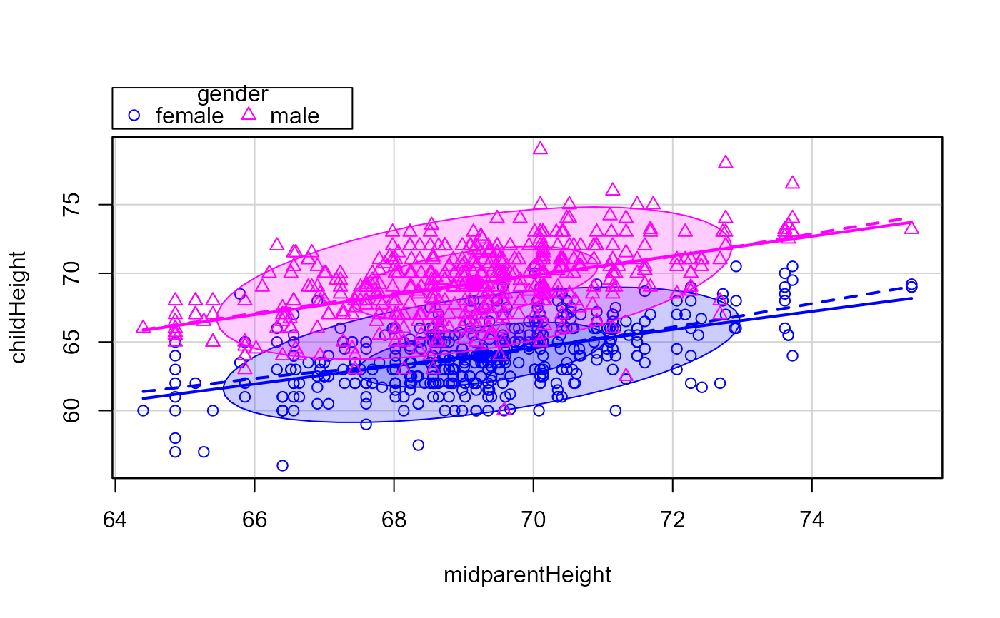
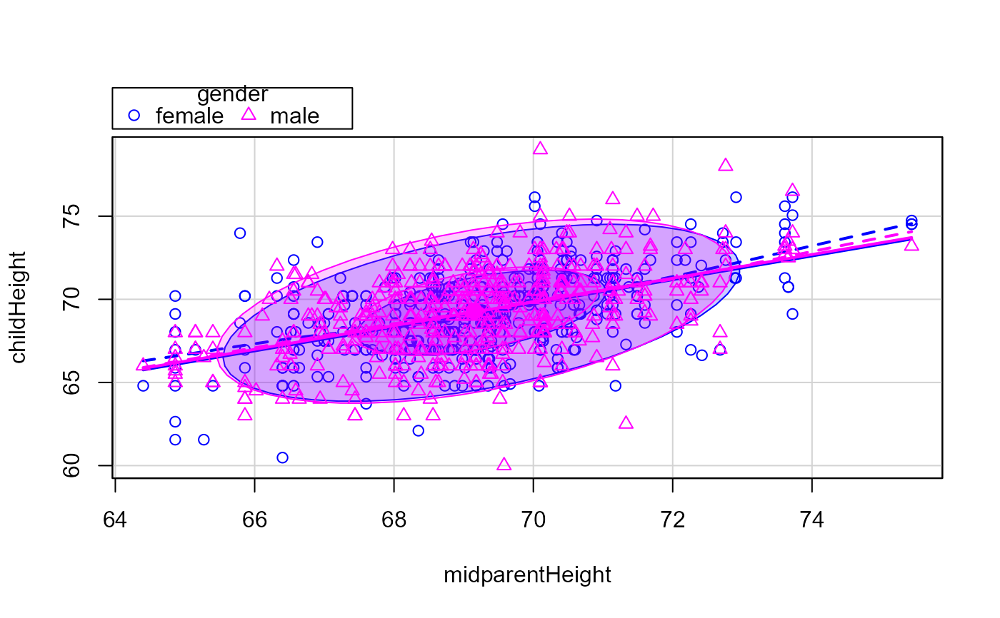
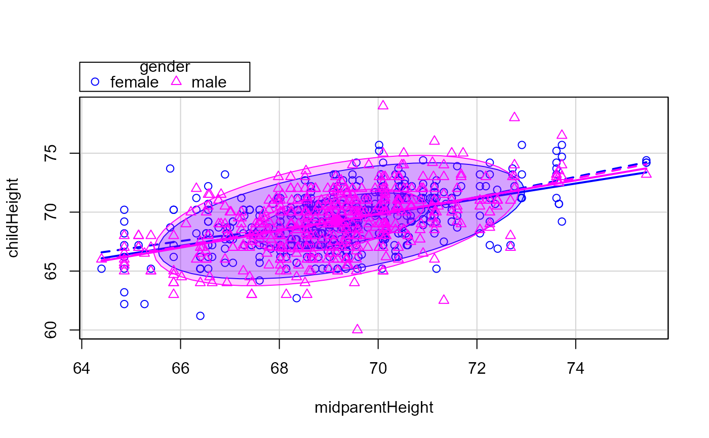
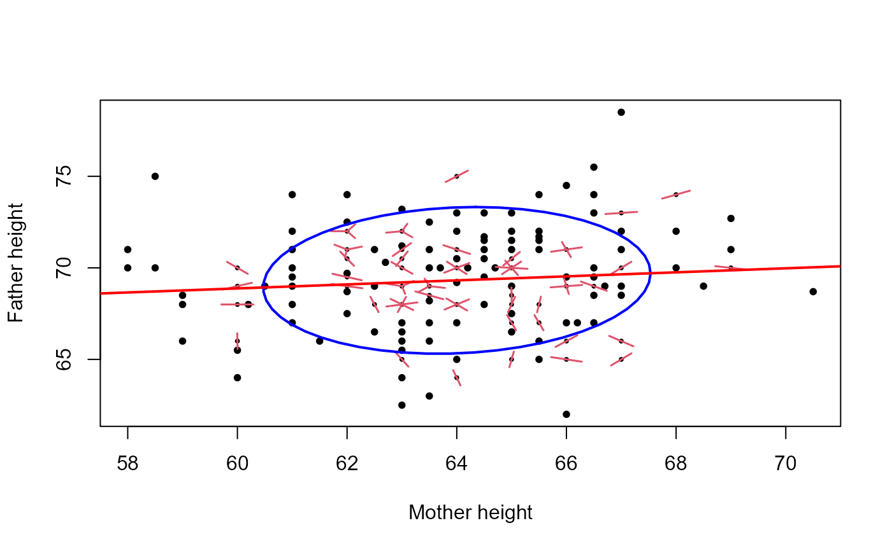

Galton's data on the heights of parents and their children, by child
Source:R/data.R
GaltonFamilies.RdThis data set lists the individual observations for 934 children in 205 families on which Galton (1886) based his cross-tabulation.
In addition to the question of the relation between heights of parents and their offspring, for which this data is mainly famous, Galton had another purpose which the data in this form allows to address: Does marriage selection indicate a relationship between the heights of husbands and wives?, a topic he called assortative mating. Keen (2010, p. 297–298) provides a brief discussion of this topic.
Format
A data frame with 934 observations on the following 8 variables.
familyfamily ID, a factor with levels
001-204fatherheight of father
motherheight of mother
midparentHeightmid-parent height, calculated as
(father + 1.08*mother)/2childrennumber of children in this family
childNumnumber of this child within family. Children are listed in decreasing order of height for boys followed by girls
genderchild gender, a factor with levels
femalemalechildHeightheight of child
Source
Galton's notebook, https://jhanley.biostat.mcgill.ca/galton/galton_heights_197_families.txt, transcribed by Beverley Shipley in 2001.
Details
Galton's notebook lists 963 children in 205 families ranging from 1-15 adult children children. Of these, 29 had non-numeric heights recorded and are not included here.
Families are largely listed in descending order of fathers and mothers height.
References
Galton, F. (1886). Regression Towards Mediocrity in Hereditary Stature Journal of the Anthropological Institute, 15, 246-263
Hanley, J. A. (2004). "Transmuting" Women into Men: Galton's Family Data on Human Stature. The American Statistician, 58, 237-243. See: https://jhanley.biostat.mcgill.ca/galton/ for source materials.
Keen, K. J. (2010). Graphics for Statistics and Data Analysis with R, Boca Raton: CRC Press, https://www.unbc.ca/keen/textbook.
Examples
data(GaltonFamilies)
str(GaltonFamilies)
#> 'data.frame': 934 obs. of 8 variables:
#> $ family : Factor w/ 205 levels "001","002","003",..: 1 1 1 1 2 2 2 2 3 3 ...
#> $ father : num 78.5 78.5 78.5 78.5 75.5 75.5 75.5 75.5 75 75 ...
#> $ mother : num 67 67 67 67 66.5 66.5 66.5 66.5 64 64 ...
#> $ midparentHeight: num 75.4 75.4 75.4 75.4 73.7 ...
#> $ children : int 4 4 4 4 4 4 4 4 2 2 ...
#> $ childNum : int 1 2 3 4 1 2 3 4 1 2 ...
#> $ gender : Factor w/ 2 levels "female","male": 2 1 1 1 2 2 1 1 2 1 ...
#> $ childHeight : num 73.2 69.2 69 69 73.5 72.5 65.5 65.5 71 68 ...
## reproduce Fig 2 in Hanley (2004)
library(car)
scatterplot(childHeight ~ midparentHeight | gender, data=GaltonFamilies,
ellipse=TRUE, levels=0.68, legend.coords=list(x=64, y=78))
#> Warning: "levels" is not a graphical parameter
#> Warning: "legend.coords" is not a graphical parameter
#> Warning: "levels" is not a graphical parameter
#> Warning: "legend.coords" is not a graphical parameter
#> Warning: "levels" is not a graphical parameter
#> Warning: "legend.coords" is not a graphical parameter
#> Warning: "levels" is not a graphical parameter
#> Warning: "legend.coords" is not a graphical parameter
#> Warning: "levels" is not a graphical parameter
#> Warning: "legend.coords" is not a graphical parameter
#> Warning: "levels" is not a graphical parameter
#> Warning: "legend.coords" is not a graphical parameter

# multiply daughters' heights by 1.08
GF1 <- within(GaltonFamilies,
{childHeight <- ifelse (gender=="female", 1.08*childHeight, childHeight)} )
scatterplot(childHeight ~ midparentHeight | gender, data=GF1,
ellipse=TRUE, levels=0.68, legend.coords=list(x=64, y=78))
#> Warning: "levels" is not a graphical parameter
#> Warning: "legend.coords" is not a graphical parameter
#> Warning: "levels" is not a graphical parameter
#> Warning: "legend.coords" is not a graphical parameter
#> Warning: "levels" is not a graphical parameter
#> Warning: "legend.coords" is not a graphical parameter
#> Warning: "levels" is not a graphical parameter
#> Warning: "legend.coords" is not a graphical parameter
#> Warning: "levels" is not a graphical parameter
#> Warning: "legend.coords" is not a graphical parameter
#> Warning: "levels" is not a graphical parameter
#> Warning: "legend.coords" is not a graphical parameter

# add 5.2 to daughters' heights
GF2 <- within(GaltonFamilies,
{childHeight <- ifelse (gender=="female", childHeight+5.2, childHeight)} )
scatterplot(childHeight ~ midparentHeight | gender, data=GF2,
ellipse=TRUE, levels=0.68, legend.coords=list(x=64, y=78))
#> Warning: "levels" is not a graphical parameter
#> Warning: "legend.coords" is not a graphical parameter
#> Warning: "levels" is not a graphical parameter
#> Warning: "legend.coords" is not a graphical parameter
#> Warning: "levels" is not a graphical parameter
#> Warning: "legend.coords" is not a graphical parameter
#> Warning: "levels" is not a graphical parameter
#> Warning: "legend.coords" is not a graphical parameter
#> Warning: "levels" is not a graphical parameter
#> Warning: "legend.coords" is not a graphical parameter
#> Warning: "levels" is not a graphical parameter
#> Warning: "legend.coords" is not a graphical parameter

#########################################
# relationship between heights of parents
#########################################
Parents <- subset(GaltonFamilies, !duplicated(GaltonFamilies$family))
with(Parents, {
sunflowerplot(mother, father, rotate=TRUE, pch=16,
xlab="Mother height", ylab="Father height")
dataEllipse(mother, father, add=TRUE, plot.points=FALSE,
center.pch=NULL, levels=0.68)
abline(lm(father ~ mother), col="red", lwd=2)
}
)
